Bienvenue dans l'exposition "Les kakis de Raph chez Kévin", qui retrace la découverte des kakis par Kévin grâce à Raph. Vous pourrez suivre le déroulé de cette découverte en passant votre souris sur les cartels à côté des tableaux !
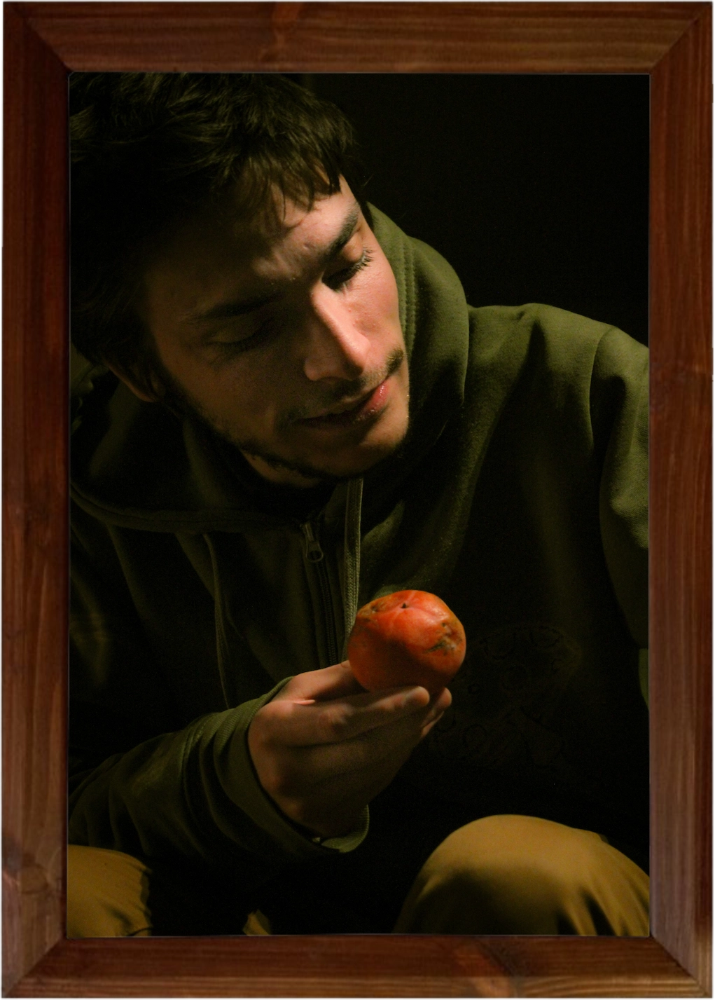
Kévin et le kaki
Portrait de Kévin, protagoniste de l'histoire et hôte de ces lieux.
Portrait de Kévin, protagoniste de l'histoire et hôte de ces lieux.
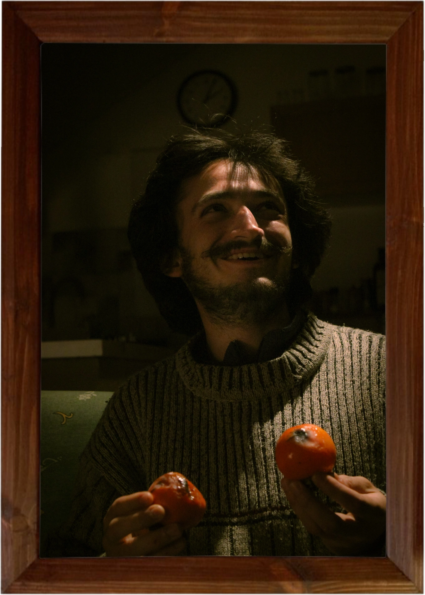
Raph et les kakis
Portrait de Raph, personnage secondaire néanmoins légendaire, sans qui cette histoire n'aurait pu avoir lieu. C'est grâce à lui (et surtout sa mamie ! (car ils proviennent de son jardini)) que Kévin découvre aujourd'hui les kakis.
Portrait de Raph, personnage secondaire néanmoins légendaire, sans qui cette histoire n'aurait pu avoir lieu. C'est grâce à lui (et surtout sa mamie ! (car ils proviennent de son jardini)) que Kévin découvre aujourd'hui les kakis.
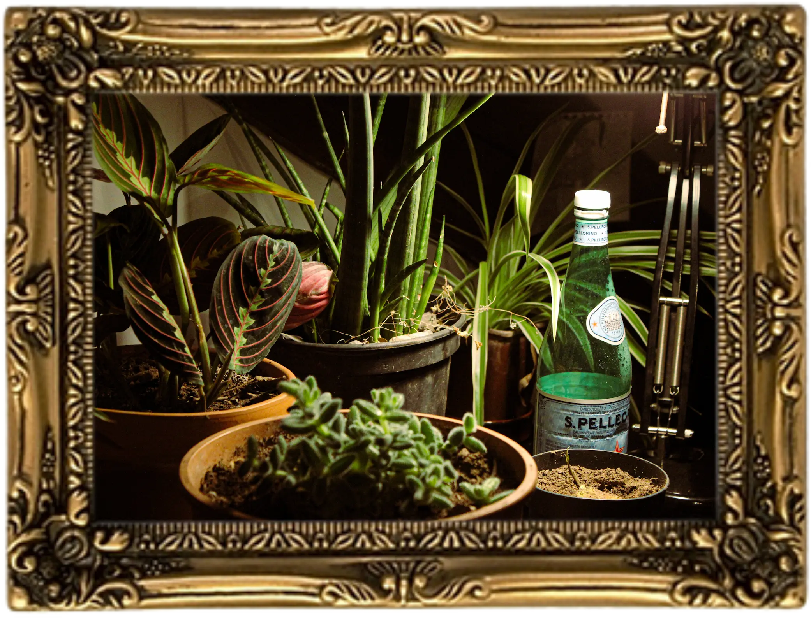
Jolies spermaphytes
Plantons le décor. Nous sommes chez Kévin, après une petite soirée pas piquée des hannetons. Mais nous en voulons encore. L'ambiance est chill, la lumière est tamisée, les chaussures sont enlevées et les pieds respirent à leur rythme sur les doux tapis et le confortable canapé de Kévin. Tout le monde est à l'aise.
Plantons le décor. Nous sommes chez Kévin, après une petite soirée pas piquée des hannetons. Mais nous en voulons encore. L'ambiance est chill, la lumière est tamisée, les chaussures sont enlevées et les pieds respirent à leur rythme sur les doux tapis et le confortable canapé de Kévin. Tout le monde est à l'aise.
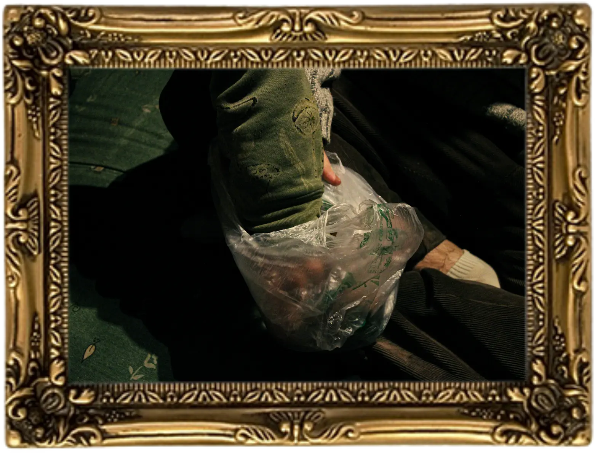
La main dans la poche
C'est dans cette ambiance paisible et détendue que Raph sort de sous son aile une poche remplie d'objets étranges : ronds comme des boules de pétanque, d'une surprenante couleur orange, et d'une douceur stupéfiante... Ni une ni deux, Kévin y plonge la paluche.
C'est dans cette ambiance paisible et détendue que Raph sort de sous son aile une poche remplie d'objets étranges : ronds comme des boules de pétanque, d'une surprenante couleur orange, et d'une douceur stupéfiante... Ni une ni deux, Kévin y plonge la paluche.
La merveille
Raph est un habitué de ces fruits. Il me confiera plus tard : "C'est un peu de la douceur, de la gelée de fruit façon cuisine moléculaire mais le plaqueminier c'est le pâtissier." Le plaqueminier n'est pas un outil de plomberie mais bien le nom de l'arbre sur lequel poussent ces merveilles. C'est un arbre originaire de Chine de la famille des Ebenaceae, arrivé en France dans la seconde moitié du XIXe siècle. Il en existe plus de 1000 variétés !
Raph est un habitué de ces fruits. Il me confiera plus tard : "C'est un peu de la douceur, de la gelée de fruit façon cuisine moléculaire mais le plaqueminier c'est le pâtissier." Le plaqueminier n'est pas un outil de plomberie mais bien le nom de l'arbre sur lequel poussent ces merveilles. C'est un arbre originaire de Chine de la famille des Ebenaceae, arrivé en France dans la seconde moitié du XIXe siècle. Il en existe plus de 1000 variétés !
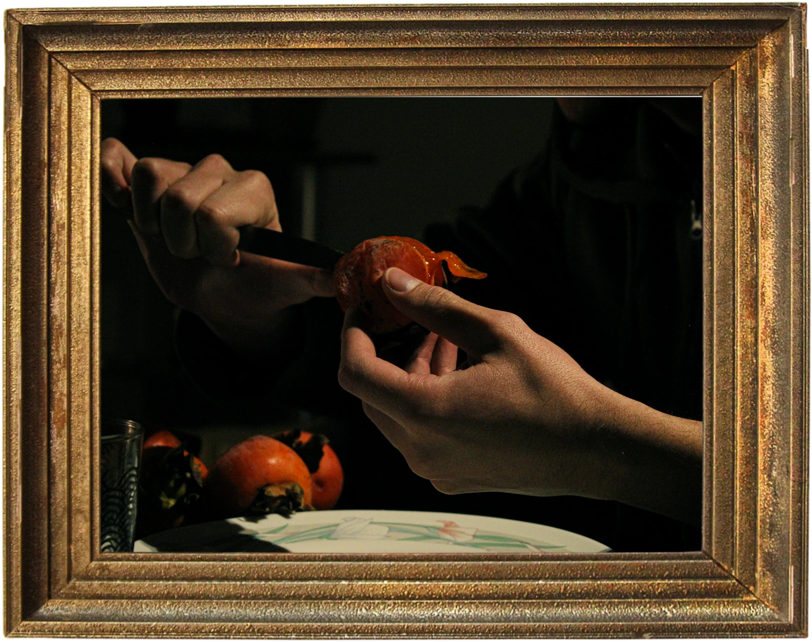
L'Ouverture 1/3
L'Ouverture 1/3 est la photo qui m'a inspiré cette série. Les couleurs et les contrastes m'évoquent une nature morte de la Renaissance/époque baroque genre Le Caravage ou jsp (sauf qu'il y a la main de Kévin qui est vivante évidemment). Regardez le kaki, sa peau, sa chair, sa couleur, l'eau en son sein qui reflète la lumière ; on dirait qu'il a été peint !
L'Ouverture 1/3 est la photo qui m'a inspiré cette série. Les couleurs et les contrastes m'évoquent une nature morte de la Renaissance/époque baroque genre Le Caravage ou jsp (sauf qu'il y a la main de Kévin qui est vivante évidemment). Regardez le kaki, sa peau, sa chair, sa couleur, l'eau en son sein qui reflète la lumière ; on dirait qu'il a été peint !
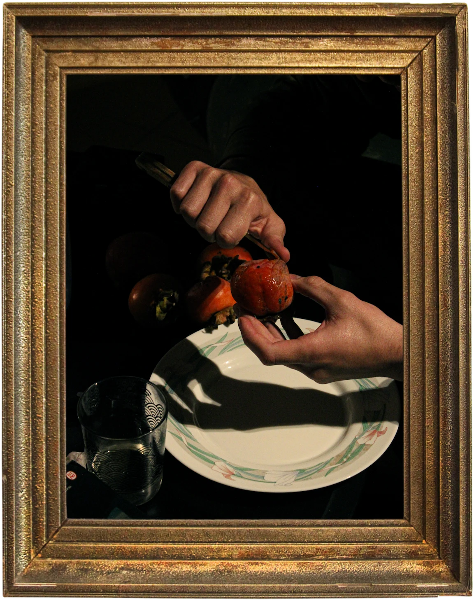
L'Ouverture 2/3
La lumière qui éclaire juste le fruit et les mains de Kévin qui travaillent, et tout le reste dans l'obscurité. Un mystère, un secret entoure le Fruit que seules les mains de Kévin peuvent dévoiler.
La lumière qui éclaire juste le fruit et les mains de Kévin qui travaillent, et tout le reste dans l'obscurité. Un mystère, un secret entoure le Fruit que seules les mains de Kévin peuvent dévoiler.
L'Ouverture 3/3
Dernière photo de l'ouverture. Le fruit semble ne jamais se décomposer : il est toujours présent, tout rond, tout brillant, sans une égratinure, mais des restes apparaissent dans l'assiette... Quelqu'un-e garderait-il-elle un portrait de kaki dans un grenier ?
Dernière photo de l'ouverture. Le fruit semble ne jamais se décomposer : il est toujours présent, tout rond, tout brillant, sans une égratinure, mais des restes apparaissent dans l'assiette... Quelqu'un-e garderait-il-elle un portrait de kaki dans un grenier ?
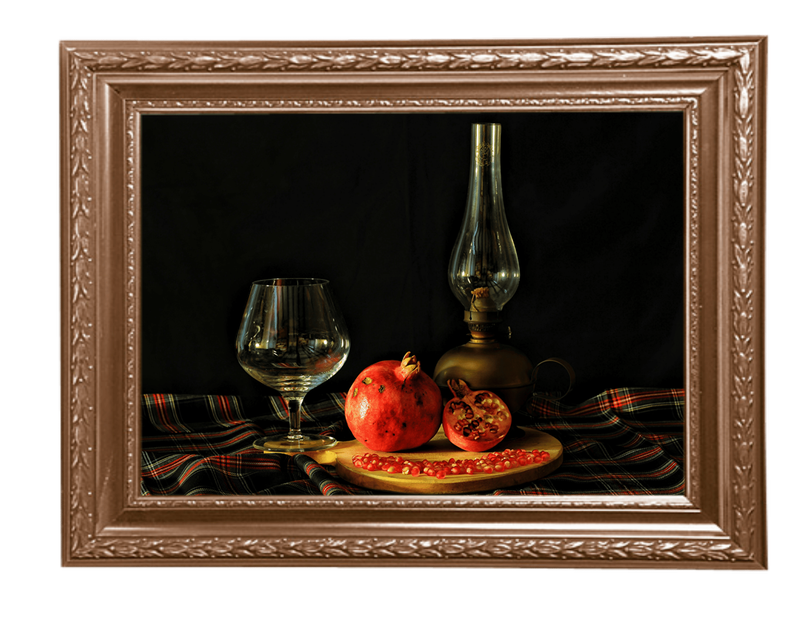
Watercolor Still Life
C'est un mec qui s'appelle Painting with Paint Basket sur youtube qui a fait ça, c'est très impressionnant. Les peintures de natures mortes ont évidemment été une source d'inspiration pour la retouche des photos d'Ouverture : un peu de cyan dans les tons sombres pour avoir un noir pas complètement noir, et du jaune dans les tons médiums et hauts pour faire ressortir les tons de la peau et les couleurs vibrantes du kaki.
C'est un mec qui s'appelle Painting with Paint Basket sur youtube qui a fait ça, c'est très impressionnant. Les peintures de natures mortes ont évidemment été une source d'inspiration pour la retouche des photos d'Ouverture : un peu de cyan dans les tons sombres pour avoir un noir pas complètement noir, et du jaune dans les tons médiums et hauts pour faire ressortir les tons de la peau et les couleurs vibrantes du kaki.
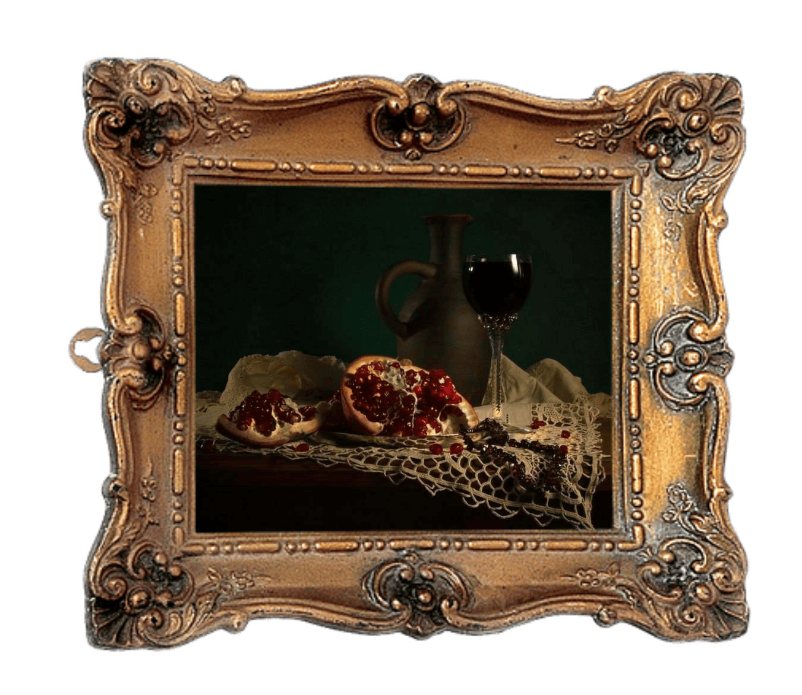
С гранатом и гранатом (Avec une grenade et du grenat), Lev Serdyukov, 2014
Lev Serdyukov est un photographe spécialisé dans la still-life photography, la photographie qui imite les peintures de natures mortes. Ce que je trouve le plus impressionnant est peut-être de réussir à reproduire un fond comme celui d'une toile, je me demande s'il tend carrément un tissu derrière ou si ce sont des effets de lumière.
Lev Serdyukov est un photographe spécialisé dans la still-life photography, la photographie qui imite les peintures de natures mortes. Ce que je trouve le plus impressionnant est peut-être de réussir à reproduire un fond comme celui d'une toile, je me demande s'il tend carrément un tissu derrière ou si ce sont des effets de lumière.
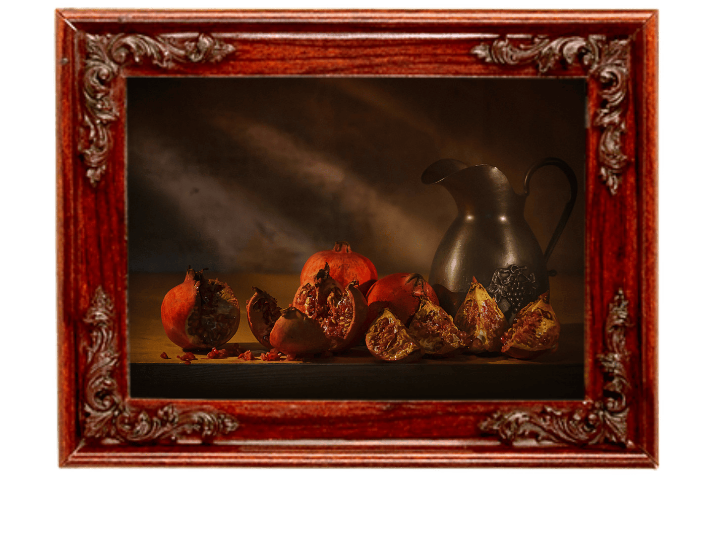
Nature Morte aux Grenade, Serge Robert, 2021
(Ce n'est pas moi qui ai oublié un "s" dans le titre.) Là encore, une photographie de nature morte qui ressemble à une peinture. Je pourrais passer des heures à regarder la peau des fruits et la texture des grains.
(Ce n'est pas moi qui ai oublié un "s" dans le titre.) Là encore, une photographie de nature morte qui ressemble à une peinture. Je pourrais passer des heures à regarder la peau des fruits et la texture des grains.
La Vocation selon Saint-Matthieu, Caravage, 1600
Une vraie peinture cette fois-ci, du moins un extrait de cette très grande huile sur toile de la chapelle Contarelli de l'église Saint-Louis-des-Français de Rome. C'est la main de Jésus, d'ailleurs elle prend la même forme que celle d'Adam dans La Création d'Adam de Michel-Ange. Kévin = Jésus ?
Une vraie peinture cette fois-ci, du moins un extrait de cette très grande huile sur toile de la chapelle Contarelli de l'église Saint-Louis-des-Français de Rome. C'est la main de Jésus, d'ailleurs elle prend la même forme que celle d'Adam dans La Création d'Adam de Michel-Ange. Kévin = Jésus ?

La Dégustation 1/2
Après avoir ouvert un kaki pendant 20 minutes, Kévin y plonge enfin les dents. Alors, c'est comment ?
Après avoir ouvert un kaki pendant 20 minutes, Kévin y plonge enfin les dents. Alors, c'est comment ?
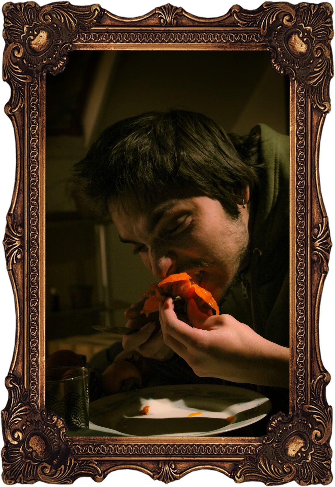
La Dégustation 2/2
Il y va avec le bout des dents et de la langue pour apprécier même le goût et la texture des plus petites particules de kaki qui parviendront à son palais. [Description du kaki par Kévin]
Il y va avec le bout des dents et de la langue pour apprécier même le goût et la texture des plus petites particules de kaki qui parviendront à son palais. [Description du kaki par Kévin]
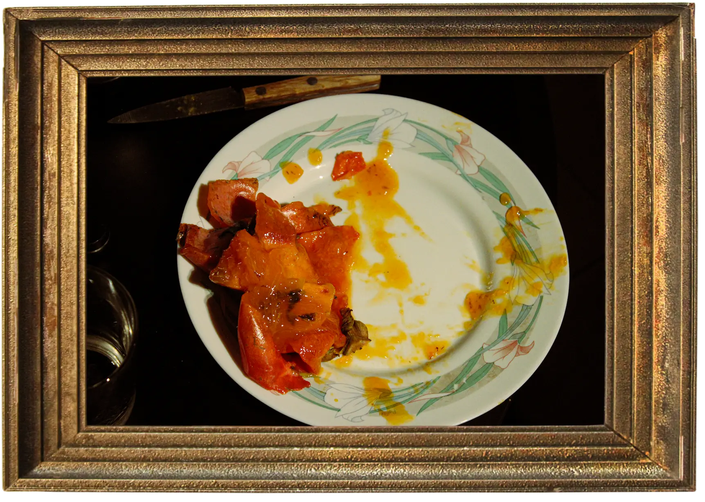
Le Carnage
Et voilà, c'est fini. Encore une fois, j'aime tout dans cette photo : svp le orange déjà. C'est pas une couleur magnifique ? Le jus un peu transparent là qui brille avec les reflets de la lumière, la peau souple du kaki, la chair du fruit... et c'est complémentaire au vert des feuilles des plantes qui sont sur l'assiette.
Et voilà, c'est fini. Encore une fois, j'aime tout dans cette photo : svp le orange déjà. C'est pas une couleur magnifique ? Le jus un peu transparent là qui brille avec les reflets de la lumière, la peau souple du kaki, la chair du fruit... et c'est complémentaire au vert des feuilles des plantes qui sont sur l'assiette.
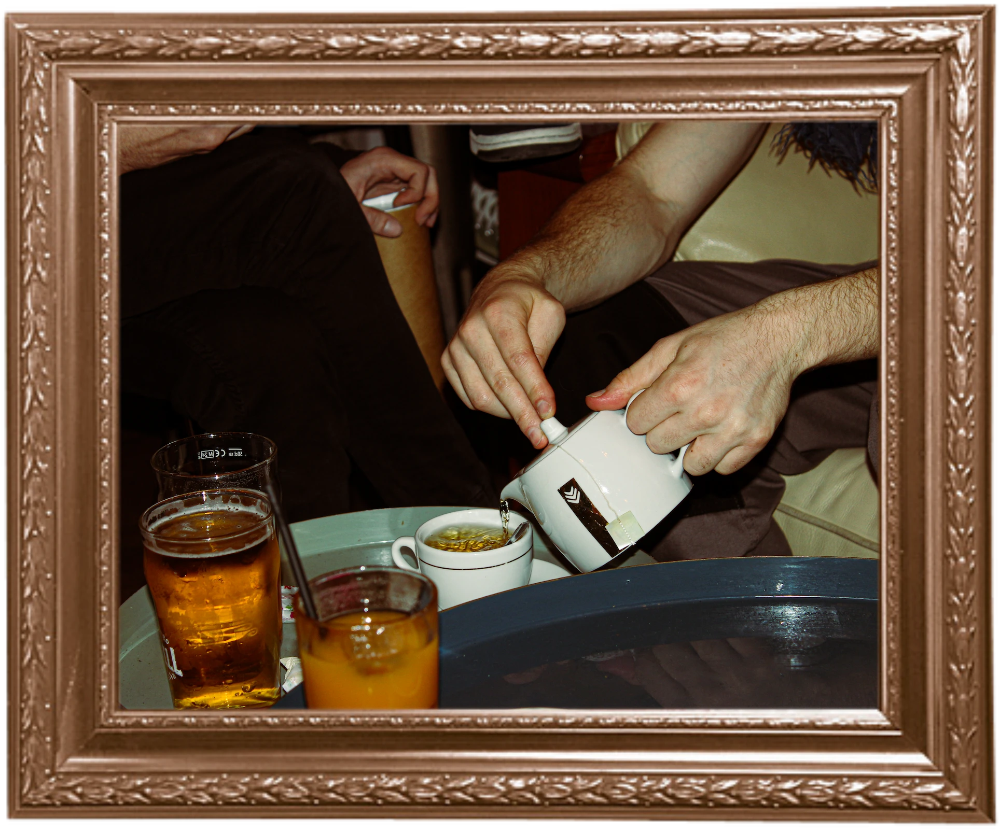
Un petit thé ?
Merveilleusement servi par Aloÿse, vous ne pourrez qu'apprécier ce breuvage. D'ailleurs, ce n'est pas son aisselle en haut à droite mais une écharpe.
Merveilleusement servi par Aloÿse, vous ne pourrez qu'apprécier ce breuvage. D'ailleurs, ce n'est pas son aisselle en haut à droite mais une écharpe.
Merci pour votre temps passé dans cette exposition !